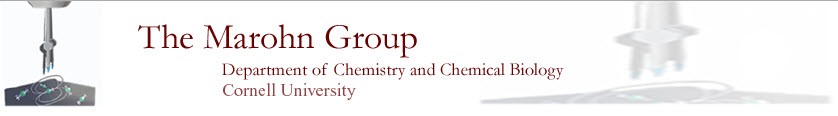

Reproducible research
- John Marohn’s public research notebook [link]
- GitHub [https://github.com/]
- Corinne E. Isaac [link]
- Hoang L. Nguyen [link]
- Ryan P. Dwyer [link]
- John A. Marohn [link]
- FreqDemod [Python package][source code][documentation]
- Zenodo [https://zenodo.org/]. Store data and assign it a doi.
LaTeX and BibTeX
- betterbib [link]: maintain your BibTeX files by comparing them with online sources and correcting whatever entries are found faulty
- bibclean [link]: prettyprint and syntax check BibTeX and Scribe bibliography data base files
- JabRef [link]: graphical-user interface for reading, writing, and searching bib files
Programming
[Wilson2014jan] Wilson, G.; Aruliah, D. A.; Brown, C. T.; Chue Hong, N. P.; Davis, M.; Guy, R. T.; Haddock, S. H. D.; Huff, K. D.; Mitchell, I. M.; Plumbley, M. D.; Waugh, B.; White, E. P.; Wilson, P. & Eisen, J. A.“Best Practices for Scientific Computing”, PLoS Biol, 2014, 12, e1001745 [10.1371/journal.pbio.1001745]
[Merali2010oct] Merali, Z. “Computational Science: …Error”, Nature, 2010, 467, 775 - 777 [10.1038/467775a].
“Software Carpentry: Teaching Lab Skills for Scientific Computing” [http://software-carpentry.org] has many helpful lessons [link]. Note especially the tutorials Version Control with Git [link] and Programming with Python [link].
Department of Chemistry & Chemical Biology
- Forms and Templates [link].
Cornell University
- Vertere laboratory chemical inventory [http://cornell.vertere.com/Login.aspx].
- Cornell Laboratory Safety Manual and Chemical Hygiene Plan [link].
- Cornell Online Material Data Safety Sheets [link].
- Digital Dropbox [https://dropbox.cornell.edu/login/?redirurl=%2F]. Send senstive files securely.
- Physical Scences Libarary [http://physicalsciences.library.cornell.edu]
- Cornell Physics Sciences Library Blog [http://blogs.cornell.edu/problemsolved/]
